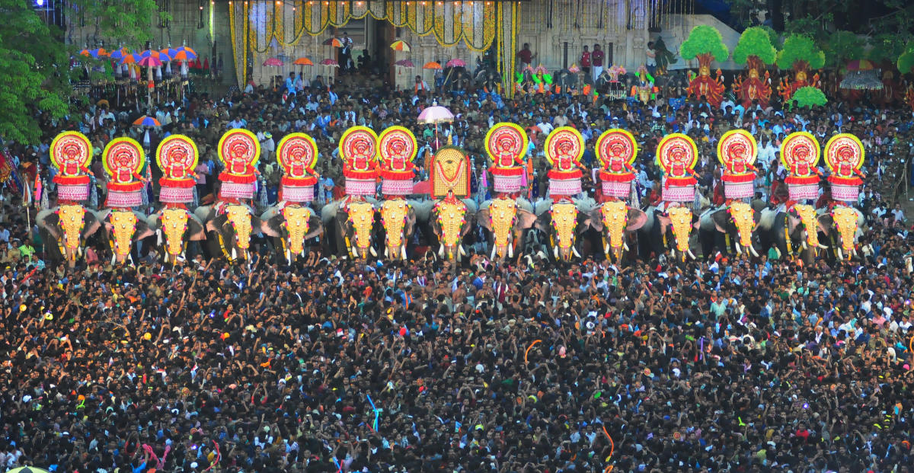

Thrissur is the third largest urban agglomeration in Kerala after Kochi and Kozhikode, and the 21st largest in India.The city is built around a 65-acre
hillock called the Thekkinkaadu Maidaanam which seats a large Hindu Shiva Temple. It is located central of the state, and 304 kilometres (189 mi)
north-west of the state's capital city, Thiruvananthapuram. Thrissur was once the capital of the Kingdom of Cochin, and was a point of contact for the
Assyrians, Greeks, Persians, Arabs, Romans, Portuguese, Dutch and English.Thrissur is also known as the Cultural Capital of Kerala because of its cultural,
spiritual and religious leanings throughout history.The city centre contains the Kerala Sangeetha Nadaka Academy, Kerala Lalithakala Akademi and Kerala
Sahitya Academy.The city hosts the Thrissur Pooram festival, the most colourful and spectacular temple festival in Kerala.The festival is held at the
Thekkinkadu Maidan in April or May.
Places to visit:
Punnathur Kotta, Shakthan Thampuran Palace, Vilangan Kunnu, Athirappilly Waterfalls, Chavakkad Beach, Dolours Basilica, Thrissur Zoo and State Museum,
Chettuva Backwater, Paramekkavu Bhagavathy Temple, Kerala Kalamandalam, Vazhachal Falls, Vadakkunnathan Temple, Guruvayur Sree Krishna Temple.